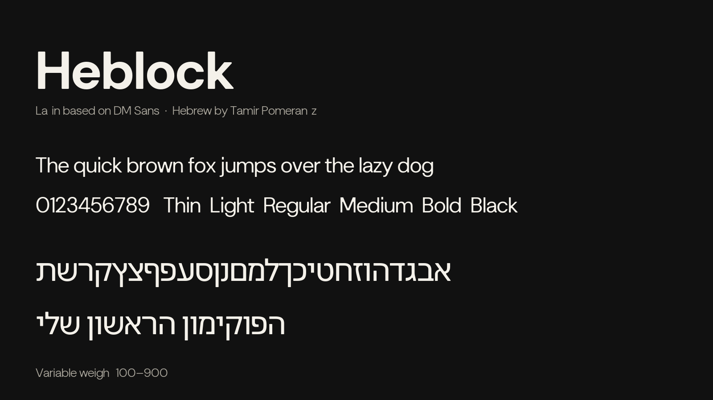
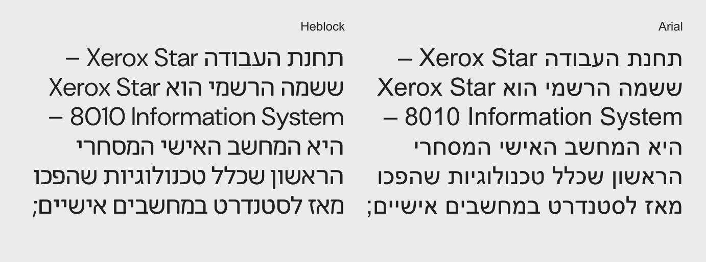
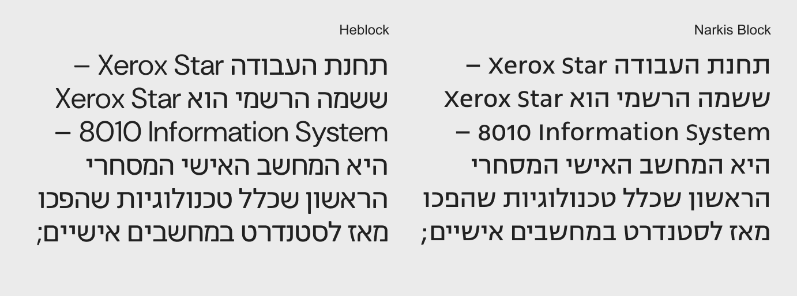
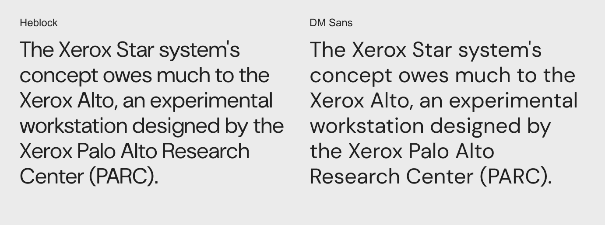

In 1958, Zvi Narkiss arrived at what can be considered a major milestone in the design of the Hebrew sans-serif letterform. In his later work, and particularly in Narkiss Block and Narkiss Tam, he defined a formal system that managed to be neutral and highly legible while still possessing a distinct character and a clear set of formal decisions. In a sense, Narkiss defined the very idea of the modern Hebrew sans-serif. It is hard to imagine doing it better.
Since then, almost every attempt to create a new Hebrew sans-serif has had to contend with this canon. Some typefaces choose to emphasize their character — such as The Basics by Michal Sahar or Assistant by Ben Nathan — while others deliberately stay close to the formal system Narkiss established. For a designer trying to create a neutral, readable Hebrew sans-serif suitable for running text, it is almost impossible not to engage with the skeletons and proportions Narkiss left behind. The alternative is to deliberately move away from them, sometimes making significant formal changes in order to create a new system.
I started designing this typeface about five years ago, with the feeling that Google Fonts was missing Hebrew typefaces that were genuinely neutral and suitable for everyday use. At the time, we were working extensively with Roboto — a relatively narrow sans-serif used by Google across a wide range of products and interfaces. I was looking for its Hebrew counterpart, and it seemed to me that such a typeface should not feel radically different in character from Arial.
Heebo, which was then one of the main Hebrew typefaces in the Google ecosystem, felt quite far from this approach. Although it was intended to serve as a Hebrew counterpart to Roboto, it has a very distinct formal character. The ש, for example, carries a clear signature of Oded Ezer; the asymmetry of the א makes it a letter that immediately attracts attention; and it is difficult to point to any particular letter and say, “If the designer of Roboto had designed this letter in Hebrew, this is probably how they would have done it.” Instead, I wanted to create a system that embodied the same typographic idea behind Roboto: something like a “crystal goblet” — a relatively transparent vessel that allows the content to remain at the center, rather than having the letters compete for attention.
The goal was simple: to create the typeface I would personally want to use. A typeface for presentations, headlines, interfaces, and above all, running text. A typeface that can be used for long periods without its formal system demanding unnecessary attention.

Like any design process, this typeface did not emerge in a vacuum. Some of the letters draw directly from the Hebrew typefaces Narkiss developed in the 1950s, while changing their proportions, width, and overall texture to better suit headlines and shorter texts.
Other letters turn specifically toward Narkiss Tam — another typeface by Zvi Narkiss, from which some of the characteristics of Hebrew Arial were derived for Windows operating systems. The choice of Arial as a source is not accidental. Over the years, Arial has become almost completely embedded in digital culture and has become “transparent”: a default typeface we encounter every day on websites, in documents, and in Google Docs. Its constant presence has made its formal origins almost invisible.

For this reason, alongside Narkiss, Arial is one of the central sources for this system. Some of the basic forms in the typeface, such as פ and ש, are directly influenced by it. At the same time, other letters return to the formal logic of Narkiss Block. The מ, for example, is based on the idea of constructing the letter within an almost square frame. The forms of ק and ל are also influenced by this visual language.

Later in the process, I moved away from the original Roboto master and began looking for a Latin foundation that would allow the Hebrew system to connect more naturally with contemporary Latin typography. I am very glad that DM Sans exists in Google's free font library. I have also used it in various branding projects, and in my opinion it is one of the most useful and versatile sans-serif typefaces currently available in the library.
The move to DM Sans also represented a shift in approach. Instead of trying to create a direct Hebrew counterpart to Roboto, I began to slightly widen the Hebrew letters, move closer to the proportions of the Latin counterpart, and create a more even and flowing texture between the two writing systems.
The final typeface is not a direct translation of DM Sans into Hebrew. The original DM Sans masters were also modified in order to create a shared and coherent system.
In the Latin version, the lowercase a received a more diagonal connection to the stem. Letters such as t and f became slightly more square, while some of the square punctuation marks were replaced with rounded forms. Letters such as Y, M, V, and W lost some of the breaks that were characteristic of the original DM Sans. The G was also reworked and given a more stable leg, while the R received a slightly more distinctive connection, intended to create a system that relates more naturally to the connections and proportions of the Hebrew letters.

Throughout the process, the goal was not to create a “Hebrew DM Sans,” but a bilingual system in which the Hebrew and Latin feel as though they belong to the same typographic world. Give me a lifetime and I still wouldn't be able to create something as successful as DM Sans.
The Hebrew draws on several layers of history: the skeletons of Narkiss, the transparency and everyday presence of Arial, and the logic of contemporary digital sans-serif typography. The connection to DM Sans allows the Hebrew to move beyond the familiar Hebrew canon without becoming overly expressive or distinctive.
After about five years of work, I am very happy to submit this project to Google Fonts. Ultimately, this is exactly why I started it: to create a typeface I would personally want to work with every day — in presentations, interfaces, headlines, and running text — and I hope it will find its place in the work of others as well.
To contribute, see github.com/tamirpomerantz/heblock-font.
בשנת 1958 הגיע צבי נרקיס לתוצר שניתן לראות בו נקודת ציון משמעותית בעיצוב האות העברית הסנס-סריפית. בעבודותיו המאוחרות יותר, ובמיוחד בנרקיס בלוק ובנרקיס תם, הוא הגדיר מערכת צורנית שהצליחה להיות ניטרלית וקריאה, אך בה בעת בעלת אופי והחלטות צורניות ברורות. במובן מסוים, נרקיס הגדיר את האידאה של הסנס העברי המודרני. אין יותר טוב מזה.
מאז, כמעט כל ניסיון ליצור סנס עברי חדש נאלץ להתמודד עם הקאנון הזה. חלק מהגופנים בוחרים להדגיש את אופיים - כמו דה בייסיקס של מיכל סהר או אסיסטנט של בן נתן - בעוד אחרים מתקרבים במכוון למערכת הצורנית שנרקיס הגדיר. עבור מעצב המבקש ליצור סנס עברי ניטרלי, קריא ורץ, קשה כמעט שלא להתייחס לשלדים ולפרופורציות שנרקיס השאיר אחריו. האפשרות האחרת היא להתרחק מהם באופן מכוון, ולעיתים לבצע שינויים צורניים משמעותיים כדי לייצר מערכת חדשה.
התחלתי לעצב את הגופן לפני כחמש שנים, מתוך תחושה שחסרים ב-Google Fonts גופנים עבריים שהם באמת ניטרליים ומתאימים לשימוש יומיומי. באותה תקופה עבדנו רבות עם Roboto - סנס צר יחסית, ששימש את Google במגוון רחב של מוצרים וממשקים. חיפשתי את המקבילה העברית שלו, והרגיש לי שגופן כזה לא אמור להיות שונה מאוד באופיו מאריאל.
Heebo, שהיה אז אחד הגופנים העבריים המרכזיים בסביבה של Google, הרגיש לי רחוק מהגישה הזו. למרות שיועד לשמש כמקבילה עברית ל-Roboto, הוא בעל אופי צורני מובחן מאוד. ה־ש׳, למשל, נושאת חתימה ברורה של עודד עזר; הא־סימטריה בא׳ הופכת אותה לאות שמושכת תשומת לב; וקשה להצביע על אות ולומר: "אם המעצב של Roboto היה מעצב את האות הזו בעברית, כך הוא כנראה היה עושה אותה". במקום זאת, רציתי ליצור מערכת שמרגישה כמו אותו רעיון טיפוגרפי שעומד מאחורי Roboto: סוג של "גביע קריסטל" - כלי שקוף יחסית שמאפשר לתוכן להיות במרכז, ולא לאותיות להתחרות בו.
המטרה הייתה פשוטה: ליצור את הגופן שאני עצמי הייתי רוצה להשתמש בו. גופן למצגות, לכותרות, לממשקים, ובעיקר לטקסט רץ. גופן שאפשר להשתמש בו לאורך זמן מבלי שהמערכת הצורנית שלו תמשוך תשומת לב מיותרת.
כמו בכל תהליך עיצוב, גם הגופן הזה אינו נוצר בחלל ריק. חלק מהאותיות שואבות השראה ישירה מהגופנים העבריים שפיתח נרקיס משנות החמישים, אך משנות את הפרופורציות, הרוחב והמרקם הכללי כדי להתאים יותר לשימוש בכותרות ובטקסטים קצרים.
אותיות אחרות פונות דווקא אל נרקיס תם - גופן נוסף של צבי נרקיס, שממנו נגזרו חלק מהמאפיינים של Arial העברי במערכות ההפעלה של Windows. הבחירה ב-Arial כמקור אינה מקרית. במשך השנים Arial נטמע כמעט לחלוטין בתרבות הדיגיטלית והפך ל"שקוף": גופן ברירת מחדל שאנו פוגשים מדי יום באתרי אינטרנט, במסמכים וב-Google Docs. השימוש המתמשך בו הפך את המקור הצורני שלו כמעט לבלתי נראה.
לכן, לצד נרקיס, Arial הוא אחד המקורות המרכזיים של המערכת. חלק מהצורות הבסיסיות בגופן, כמו פ׳ וש׳, מושפעות ממנו באופן ישיר. במקביל, אותיות אחרות חוזרות אל ההיגיון הצורני של נרקיס בלוק. המ׳, למשל, מבוססת על הרעיון של בניית האות בתוך מסגרת כמעט ריבועית. גם הצירופים ק׳ ול׳ מושפעים מהשפה הצורנית הזו.
בשלב מאוחר יותר של התהליך התרחקתי מהמאסטר המקורי של Roboto וחיפשתי בסיס לטיני שיאפשר למערכת העברית להתחבר באופן טבעי יותר לטיפוגרפיה לטינית עכשווית. אני שמח מאוד ש-DM Sans קיים במאגר הגופנים החופשיים של גוגל - עבדתי איתו גם במיתוגים שונים ולדעתי זה הגופן הסנס-סריפי השמיש והורסטילי ביותר שנוכל למצוא כרגע במאגר הפונטים.
המעבר ל-DM Sans היה גם שינוי בגישה. במקום לנסות לבנות התאמה ישירה ל-Roboto, התחלתי להרחיב מעט את האותיות העבריות, להתקרב לפרופורציות של המקבילה הלטינית וליצור מרקם טקסט אחיד וזורם יותר בין שתי השפות.
הגופן הסופי אינו תרגום ישיר של DM Sans לעברית. גם המאסטרים המקוריים של DM Sans עברו התאמות כדי ליצור מערכת משותפת וקוהרנטית.
בגרסה הלטינית ה־a הקטנה קיבלה חיבור אלכסוני יותר ל-stem. אותיות כמו t ו-f הפכו מעט ריבועיות יותר, וחלק מסימני הפיסוק המרובעים הוחלפו בצורות עגולות. אותיות כמו Y, M, V ו-W איבדו חלק מהשבירות שהיו מזוהות עם הגרסה המקורית של DM Sans. גם ה-G עברה עיבוד וקיבלה רגל יציבה יותר, בעוד שה-R קיבלה חיבור מעט ייחודי יותר, שנועד ליצור מערכת שמתכתבת טוב יותר עם החיבורים והפרופורציות של האות העברית.
המטרה לאורך התהליך לא הייתה ליצור "DM Sans עברי", אלא מערכת דו־לשונית שבה העברית והלטינית מרגישות כאילו הן שייכות לאותו עולם טיפוגרפי. אם תתנו לי חיים שלמים לא אצליח ליצור משהו מוצלח כמו DM SANS.
העברית נשענת על כמה שכבות של היסטוריה: על השלדים של נרקיס, על השקיפות והנוכחות היומיומית של Arial, ועל ההיגיון של סנס דיגיטלי עכשווי. החיבור ל-DM Sans מאפשר לה לצאת מהקאנון העברי המוכר מבלי להפוך לאקספרסיבית או מאופיינת מדי.
אחרי כחמש שנים של עבודה, אני שמח להגיש את הפרויקט ל-Google Fonts. בסופו של דבר, זו בדיוק הסיבה שבגללה התחלתי אותו: ליצור גופן שהייתי רוצה לעבוד איתו בעצמי ביום־יום במצגות, בממשקים, בכותרות ובטקסט רץ, ואני מקווה שהוא ימצא את מקומו גם אצל אחרים.
לתרומה לפרויקט ראו github.com/tamirpomerantz/heblock-font.